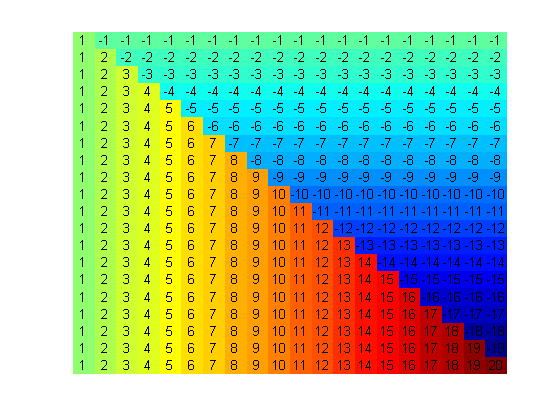
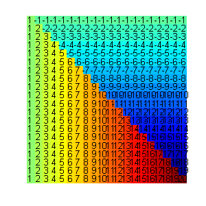
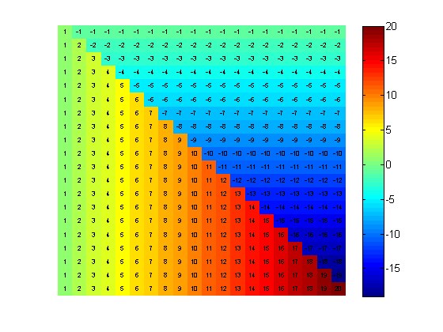
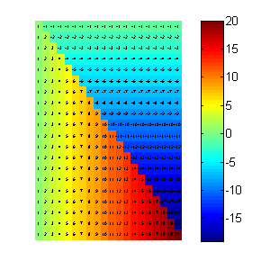
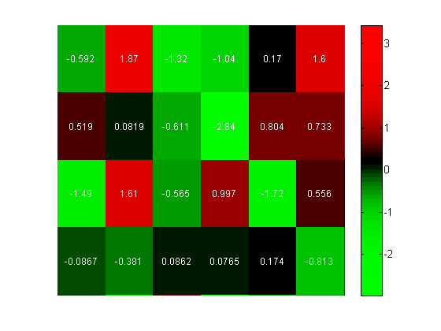
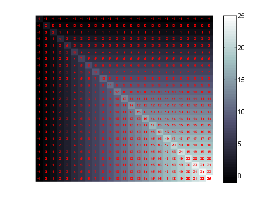

Annotated Heat Maps
A number of people have asked me whether MATLAB can add text to heatmaps to show the exact values. This is very easy to do, however, making a the text robust to resizing, zooming and other operations is a little trickier.
Contents
A basic heat map
The image command or imagesc command can be used to create heat maps. The difference between the two functions is that imagesc scales the colormap of the image to give the maximum range of colors. For this example I will use some of the matrices in gallery.
data = gallery('invhess',20); imagesc(data) axis off
Adding text
When the heat map is small, it is sometimes convenient to see the actual data values on the image. These are easy to add using the text function.
[rows,cols] = size(data); for i = 1:rows for j = 1:cols textHandles(j,i) = text(j,i,num2str(data(i,j)),... 'horizontalAlignment','center'); end end
Problems with this basic method
This is fine until you resize the figure or zoom in. The font size for the text is fixed so the image quickly gets messy if you make it small.
set(gcf,'position',[100,100,300,300])
 A function to work around this problem
around this I have created a function heatmaptext that adds listeners to the figure that adjust the font size of the text if the figure is resized or if you zoom in on the heat map.
figure heatmaptext(data);
This function is robust to resizing of the figure.
set(gcf,'position',[100,100,300,300])
 Some more examples
figure data = randn(40,20); heatmaptext(data,'fontcolor','w','precision',3); colormap(redgreencmap) set(gca,'Xlim',[4.5,10.5],'Ylim',[5.5,9.5]);
figure data = gallery('moler',25); heatmaptext(data,'fontcolor','r'); colormap(bone)